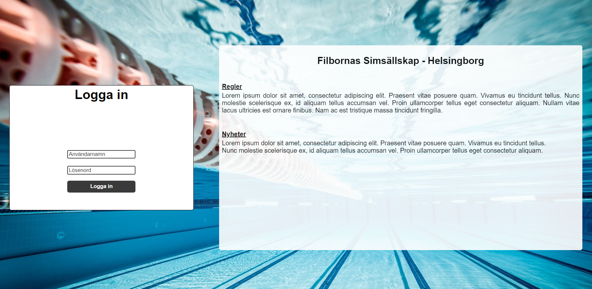

-
Mockup - egen hemsida
Detta är en sida som just nu är under utveckling. Utifrån en affärsidé som vi själva tagit fram så håller jag nu på att skapa en första prototyp på hemsida till den.
Sidan är responsiv och jag använder mig även av json.server för att skapa ett fejk API som konsumeras med JS via webbläsarens fetch API.
Länk till koden: GitHub
-
ASP.NET MVC applikation
Här har jag skapat en ASP.NET MVC applikation som konsumerar ett eget web api.
På sidan listas kurser, lärare och studenter och det går att klicka för att se mer om dessa. På kurserna går det också att se vem som är lärare och listade studenter.
Länk till koden: GitHub
-
Övning - Inloggningssida
Förslag på en startsida med inloggningsfunktion till ett simsällskap. Till sidan skulle vi använda oss utav html/ Css/ JS och göra sidan responsiv.
Länk till hemsidan: Filborna Simklubb Användarnamn: Sara Lösenord: qwe123
